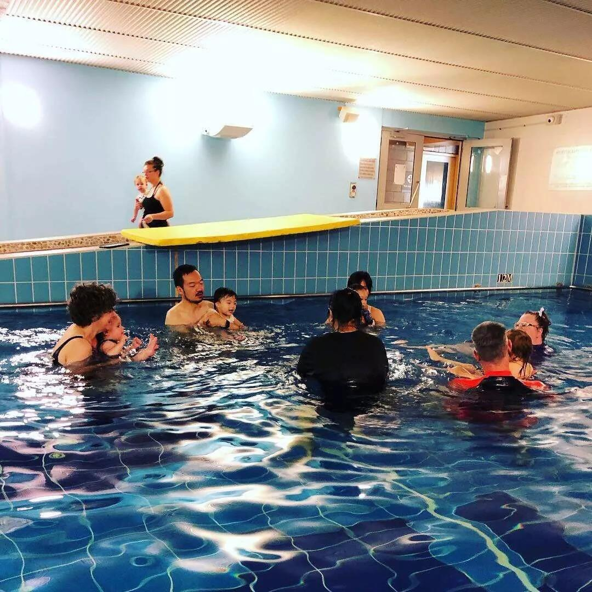
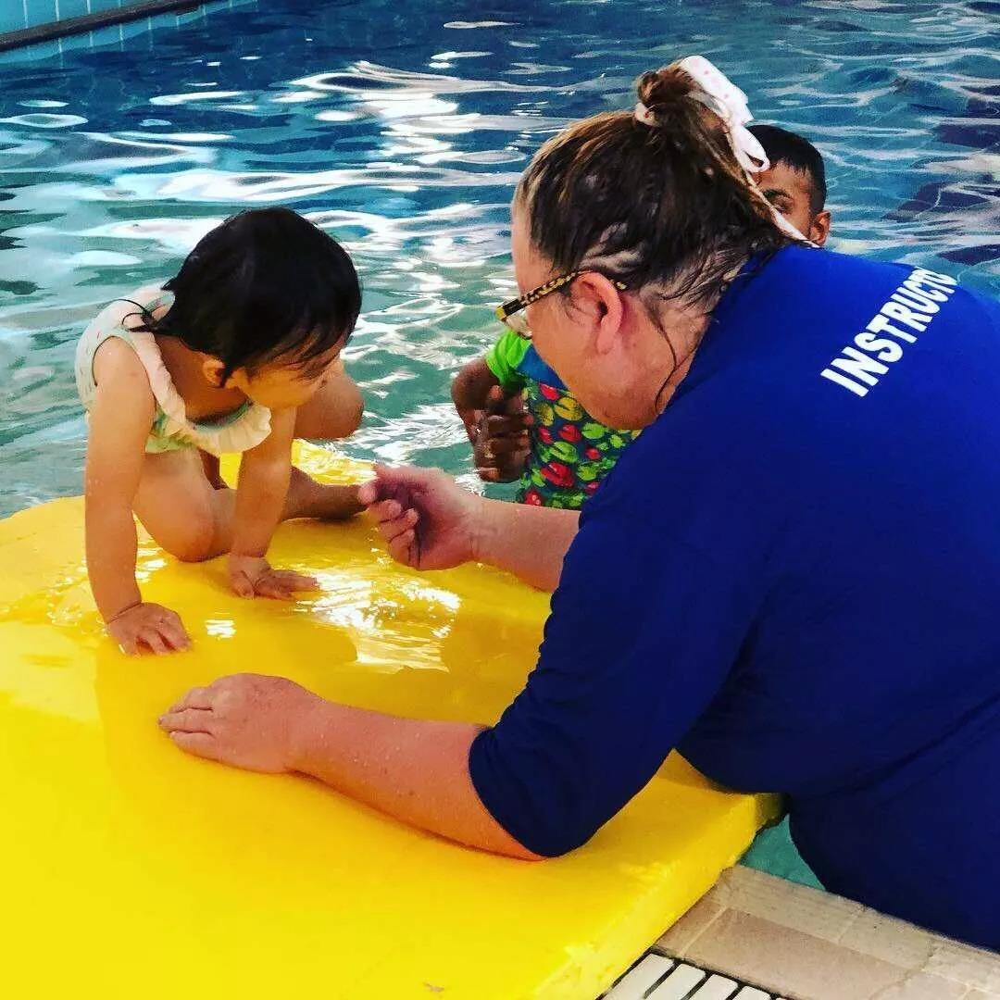
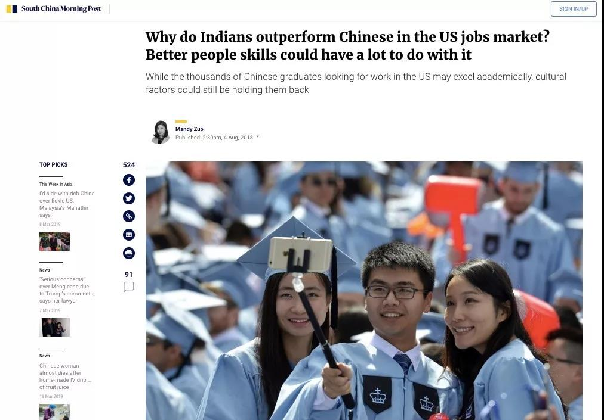
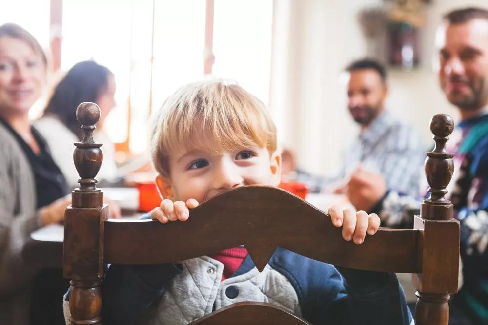

出高价送孩子出国留学，结果却是给印度人打工？
专栏名称：新西兰熊孩子 作者： 新西兰熊孩子 简介： 新西兰熊孩子，倡导放养式轻松育儿的亲子公众号，分享在新西兰养娃的那些事儿。主理人之爸爸大狗熊，还没红过就已经过气的“网红”，靠晒娃怒刷存在感的奶爸一枚；妈妈鲁鲁，前报社女编辑，现全职妈妈＋新媒体创作人，每天忙于与娃的吃喝拉撒打交道；宝宝Molly，出生在新西兰的快乐宝宝，喜欢对陌生人说“Hi”，喜爱冒险的魔羯座一枚。
1. 游泳课上的发现：印度爸爸的小动作
每个周六的上午，我都有一项例行工作：带着女儿 Molly 去上游泳课。新西兰是个四面环海的国家，游泳也是一项非常基本的技能，特别是在这里出生的小孩，4-5 岁不但已经会游泳，还有很多已经去上冲浪课了。所以，给孩子上游泳课，越早越好。Molly 是从 6-7 个月时开始上游泳课的。
在新西兰上游泳课不像国内有的地方，家长交钱，然后把孩子扔给老师就行。在这里上游泳课得家长亲自带着，在游泳池里跟着老师进行各种动作。可能是因为需要一定的体力，也可能是因为周末的时间妈妈们难得放松一下，带孩子来上游泳课的，大多都是爸爸。平时我不太有机会近距离体验其他中国人之外的爸爸如何与子女互动的方式，Molly 的游泳课包括我大约有 5、6 个爸爸会来参加，于是对于我来说，上游泳课也成了一个观察和学习其他国家的父母如何与孩子互动的好机会。

我们的课上，有一个印度爸爸，两个白人爸爸，一个韩国妈妈，两个中国爸爸，还有一个毛利爸爸。毛利爸爸长得和迪斯尼动画片《海洋奇缘》里的半神人毛伊超像，巨壮，也是一身的纹身。孩子做出一个新动作他就爽朗地哈哈大笑，还经常把孩子扔到空中又落回水里。他是游泳池里最爱笑的一个爸爸。
两个白人爸爸性格不像毛利爸爸那样奔放，但也非常轻松，也就是：孩子做啥他们都 OK。完成动作OK，不完成也没啥关系，基本都在夸 “棒极了”之类。
两个中国爸爸（我是其中一个）的表情就没有前面那几个爸爸那么随意且快乐了。我们经常不自觉地锁紧眉头睁大双眼，生怕错过了老师的指示和示范。孩子做出动作后，我们也总是左看右看和其他人的动作是否统一。

至于韩国爸爸，就像上面说的，他根本就不下水！偶尔来了也是在游泳池边看看，难为了那个瘦小的韩国妈妈，在一堆大汉中操练着孩子，折腾得满头大……哦，游泳池里应该没有流汗。
最有意思，也最值得学习的，是那个印度父亲。他专心带着孩子练习，如果孩子没有做到位，他还经常抬起脚踢两下水做示范。同时，他又非常投入地参与这个过程，孩子每完成一项动作，他也会发自内心地微笑和鼓励。可以说他中和了毛利爸爸的快乐、白人爸爸的放松，以及中国爸爸的认真。他的方式是如此地自然，以致有时我带 Molly 上课前，我都会提醒自己，多观察一下这位印度爸爸，多向他学习下如何教育孩子。
但在多次观察之后，我忽然发现了印度爸爸的一个不容易被注意到的细节动作，这个小小的行为，解答了我心中的一个很长时间没有答案的问题。
那个问题是：为什么印度人要比中国人，在西方国家更容易找到工作？为什么在国外特别是美国的职场上，印度管理者要远多于中国人？
2. 硅谷职场：印度人完胜华人
中国和印度虽然教育方式和文化背景差别巨大，但都有一个共同点：父母在选择送孩子出国学习时，都会优先考虑美国，而且大多会选择理工科和计算机领域。因此在美国硅谷，印度人算是中国人在职场上最大的竞争对手。
在硅谷，华裔总人口占到 28%，在技术岗位的华裔数量也许和印度人旗鼓相当，但管理阶层的华裔人数与印度裔相比就不是同一个数量级了。位于硅谷的加州大学伯克利分校和斯坦福大学的一项综合调查表明：截止 2012 年，印度裔做高管的公司占到了 33.2%。在美国硅谷的总人口中印度裔仅占 6%，但是创办的公司占到了硅谷所有公司的 15%。
硅谷的数万家科技公司中，印度裔中高管比比皆是，而华裔高管非常罕见，中管也不多见。美国高科技领域的职场常态是 ：CEO白人，中高管印度人，一线工程师中国人 + 印度人。
近几年，当世界最顶尖的两大科技公司谷歌和微软都由印度 CEO 掌舵后，很多中国家长才忽然发现：原来我们把孩子送出国读书，他们不但要和印度人抢工作，抢到工作后他们的老板也是印度人啊！
微软 CEO 萨蒂亚﹒纳德拉，1967 年出生于印度海德拉巴，2016 年 2 月被任命为微软新任 CEO。
谷歌 CEO 桑达·皮恰
这不仅是我们的感觉，就连西方人也意识到了这样的趋势。在《华尔街日报》网站，就有一篇名为 《How Does India Export So Many More CEOs Than China?》（比起中国，印度是如何输出那么多 CEO 的）的文章分析了这个现象。
为什么印度人更容易找到好的工作，更胜任管理职位呢？传统认为印度人比起中国人有语言、行业、集团三大优势。英语是印度的通用语言，IT 是印度领先中国十几年的领域，而且印度人喜欢抱团，一个印度主管会提携一堆印度员工，这都是印度人比中国人有竞争力的优势。
这些趋势对于大多数中国家长来说，也许离大家太远，也太抽象，无法影响自己的行为与教育，但我从游泳课上印度爸爸身上观察到的那个习惯，却是我们可以运用到每天的日常生活里，去影响和改变孩子的能力的一种教育方式！
美剧《硅谷》里，中国工程师的形象是这个样子：穿着和发型土气，不善言谈，活儿做得好，但经常被欺负……好像和真实情况也很像
3. 沟通比成绩更能影响孩子的人生
事实上，每次上游泳课时，印度爸爸会比其他两个亚洲国家的家长多做一件事。
他会在上课前、课程中或是课程结束后，和老师有事没事地闲聊几句。有的时候是询问老师一些与游泳相关的问题，大部分时间就只是闲聊。他仿佛总能找到一些话题来开启对话，也能从对方的回答中找到信息，提个问题接上话，然后将对话继续下去。
当我发现了这个细节，我就会格外留意，然后我发现，虽然每次他的这种 “没啥干货” 的闲聊不会很长，但一定是每次游泳课都会有。而中国和韩国的家长，也就是来的时候说一声 hello，走的时候说一声 see you，其他也没啥交流了。
你可能会说，这肯定嘛，印度人从小学的语言就是英语，他们的英文普遍都挺好，所以交流起来也很自然。但我来到新西兰生活后发现，其实纯粹从语言水平的角度，很多中国学生或是职场人士的英语能力，不低于印度人。但为什么在沟通时，却感觉印度人要强出很多呢？这并不只是语言水平的问题，也有文化背景的影响。
同样是美剧《硅谷》，印度裔工程师的气场就要比中国的要强一些
我在 2012 年去印度旅行时，最大的一个感受就是：印度是人的森林。每天都会有无数的人向你兜售商品和服务，会有无数的主动推销、讨价还价和你来我往。
作为宅男，当时的我被这个国家的 “主动” 文化弄得有些吃不消，但现在想想，恰恰是这种文化背景加上大量的练习，让印度人具备了中国人不太具有的沟通能力、人际拓展能力、谈判能力。
印度的孩子从小就有这样的意识，也会对家长的行为耳熏目染。当他们进入学校学习时，他们可能学习成绩比不上中国孩子，但因为经常主动向老师提问和交流，往往会给老师留下更深的印象。当他们进入职场工作时，同样因为主动，同事和老板会对他们有更正面的评价。
印度人的沟通能力，要远远强于其他亚洲国家的人
国外的华裔工程师经常抱怨印度人太会和老板沟通，太会 “拍马屁”。但往往他们也会很苦涩地加一句：“如果换做我，想拍马屁也不知道该怎么开口啊……”
在《南华早报》英文版的网站的一篇文章 “Why do Indians outperform Chinese in the US jobs market? Better people skills could have a lot to do with it” 也用详细的数据和事实说明了这个问题的答案：为什么印度人在美国职场领先华人？更好的人际沟通能力起了很大作用。

我的意思当然不是要你教孩子学习如何拍马屁。
中国的父母总是会过度看重那些可以量化的成绩，但却会忽视无法量化的“软能力”，比如沟通能力和共情能力。但后者，对于人的成长，影响更加关键。
我们应该向印度的父母学习，培养孩子们主动交流的能力与全情投入的沟通理解能力，甚至是适当的谈判能力。而这种培养，最有效的方式就是以身作责，在和孩子一起时，主动和别人交谈，问候，互动，让孩子也参与其中。这是我作为一个宅男爸爸需要克服的障碍与短板，但我知道，它对于孩子是多么重要。

我经常见到一些妈妈爸爸们带着孩子出门时，眼中只有孩子，也只和孩子交谈，很少和别人交流，孩子就是他们眼中的整个世界。但是，孩子眼中的世界，不应该仅仅有你，也应该有着其他更多的人。
如果你在孩子面前都从来不与陌生人交流的话，又怎么能够指望孩子长大后自动变得开朗活泼善于沟通呢？
作为父母，让孩子们的世界不只是被我们局限，也是我们在为人父母的路上，一个需要长期面对的挑战。